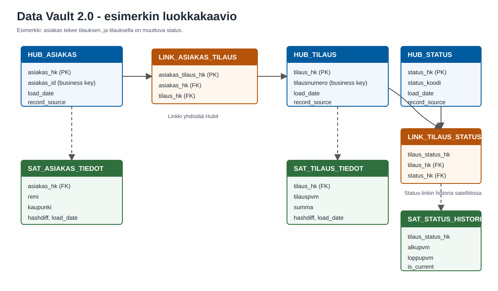

Data Vault on skaalautuva ja auditoitava tietomallinnusmenetelmä, joka soveltuu erityisesti suurten ja muuttuvien tietovarastojen hallintaan.
Dan Linstedt kehitti menetelmän tiimeineen 1990-luvulla Lockheed Martinilla (DataVaultAlliance: FAQ About Data Vault 2.0). Tarve syntyi lähdejärjestelmien muutoksista: perinteinen tietovarastorakenne muuttuu vaikeasti ylläpidettäväksi, kun lähteitä on paljon ja liiketoiminnan rakenteet muuttuvat nopeasti. Data Vault tallentaa historian, tukee datan jäljitettävyyttä ja kestää lähdejärjestelmien muutoksia.
Data Vault 2.0 laajentaa alkuperäistä menetelmää kokonaisemmaksi lähestymistavaksi: mallinnuksen lisäksi se kattaa arkkitehtuurin, kehitysmenetelmän, automaation ja nykyaikaisten data-alustojen käytännöt (DataVaultAlliance: Data Vault 2.0 Introduction).
Data Vault 2.0 jakaa tietomallin kolmeen perusrakenteeseen: Hubeihin, Linkkeihin ja Satelliitteihin (Scalefree: Data Vault Glossary). Rakenne erottaa toisistaan pysyvät liiketoiminta-avaimet, niiden väliset suhteet ja ajan myötä muuttuvat kuvailevat tiedot. Uuden lähdejärjestelmän tai attribuutin lisääminen ei riko olemassa olevaa rakennetta.
Linkeillä on eri rooleja. Tavallinen linkki kuvaa kahden tai useamman Hubin suhdetta. Tapahtumalinkki kuvaa yksittäistä tapahtumaa. Status-linkki kuvaa kohteen suhdetta tilaan, kuten tilauksen yhteyttä statukseen avoin, toimitettu tai peruttu — voimassaolo ja muutoshistoria tallennetaan linkkiin liittyvään satelliittiin (Scalefree: Effectivity Satellite).
